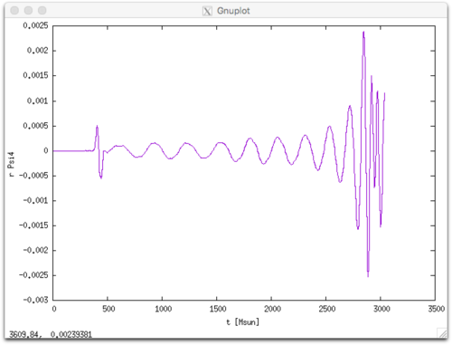

This tutorial will guide you through the steps necessary to perform a binary neutron star (NS) merger simulations with tabulated nuclear equation of state (EOS) and neutrino leakage.
mass_conversion parameter, since it is actually not needed when using the tables and scripts provided with WhiskyTHC.Download and unpack the WhiskyTHC core distribution with the commands
$ wget http://personal.psu.edu/dur566/downloads/WhiskyTHC.tarThe tarball contains scripts and microphysics tables for WhiskyTHC. It does not contain the actual source code, which is instead hosted on bitbucket.
Unpack the tarball with
$ tar xvf WhiskyTHC.tar
$ cd FreeTHCUse the GetComponents utility to checkout Cactus and WhiskyTHC
$ ./scripts/GetComponents --parallel thornlists/full.thThis will download Cactus, Carpet, CTGamma, and WhiskyTHC and place them in a folder called Cactus. This will also download batchtools, the set of scripts I use to manage simulations.
GetComponents has some problem with the capitalization of repository names from bitbucket, where WhiskyTHC is hosted. To workaround these issues, it is necessary to run the fixsymlinks.sh script after GetComponents.
$ ./scripts/fixsymlinks.shNOTE: GetComponents will place a copy of the thornlist used for the checkout in Cactus/thornlists.
Detailed instructions on how to compile can be found in Cactus/doc/UsersGuide.pdf. In brief, you need to load all necessary modules, create a configuration, and then compile it.
Example of module lists for some of the machines I have compiled and run WhiskyTHC can be found in the Cactus/batchtools/templates/cactus folder. If you are using bash as login shell, you can load them with the source command (in the Cactus folder):
$ source batchtools/templates/cactus/comet.envTo create a configuration you will need to prepare a thornlist, that is a list of components to be built, and a config file. An example of thornlist is the full.th file, which contains everything I typically use in a production run. Example of optionlists for some machines where I compiled and run WhiskyTHC can be found in the batchtools/templates/cactus subfolder of Cactus.
For example, on SDSC Comet you can create a configuration
$ yes | make thc THORNLIST=thornlists/full.th \
options=batchtools/templates/cactus/comet.cfgIf this command is successful you can then compile with
$ make thc -j4WhiskyTHC uses tabulated properties of NS matter. To run a simulation you will need three tables:
A zero-temperature beta-equilibrated slice of the EOS to be used with Lorene to generate the binary initial data. You will also need a version of the same table in “Pizza” format which is used by WhiskyTHC to initialize the electron fraction from the Lorene data.
An equation of state table in HDF5 format to be used for the evolution.
A table with chemical potantials used to compute weak rates.
The format of these tables is documented in the code, see the THCExtra/EOS_Thermal_Table3d and THCExtra/WeakRates thorns. THCExtra/tools/eos_table contains scripts that can convert tables from stellarcollapse.org to the format used by WhiskyTHC and can extract zero-temperature slices in Lorene and Pizza format.
For this tutorial we will use the LS220 tables in the Data/EOS/LS220 folder.
Please refer to the Lorene documentation for how to create new initial data. In this tutorial, we will use the initial data distributed together with WhiskyTHC and available in the Data/LoreneData folder. In particular, the instructions refer to the binary LS220_T001_13641364_45km (LS220 EOS; initial temperature 0.01 MeV; 1.364 Msun vs 1.364 Msun; initial separation 45 km) that can be found in the Data/LoreneData/GW170817/R01 folder. The same procedure can be used to run other binaries.
The parameter file (parfile in brief) contains all necessary inputs to setup a binary simulation. In this tutorial we will use the example parfile parfiles/bns_gw170817_ls220_q1.par distributed with WhiskyTHC. The parfile starts with a list of modules (thorns in Cactus jargon) used for the simulation:
ActiveThorns = "
ADMBase
...
"This is followed by the parameters for each thorn. You can find more details about the parfile in the Cactus documentation Cactus/doc/UserGuide.pdf and in the documentation of each thorn, which can be compiled with the command (in the Cactus folder)
$ make [ThornName]-ThornDocFor example
$ make THC_Core-ThornDocgenerates the file doc/ThornDoc/THCCore/THC_Core/documentation.pdf.
Here, I only give a summary of the first parameters you may want to play with.
This sets the maximum wallclock time:
TerminationTrigger::max_walltime = @WALLTIME_HOURS@At the end of this time the simulation will checkpoint and terminate. If you use batchtools to manage your simulations @WALLTIME_HOURS@ will be automatically replaced when you create a segment according to the settings you have chosen for batchtools.
The initial data file and EOS are set by
PizzaIDBase::eos_file = "@HOME@/FreeTHC/Data/EOS/LS220/0.01MeV/LS_220_25-Sept-2017.pizza"
LoreneID::lorene_bns_file = "@HOME@/FreeTHC/Data/LoreneData/GW170817/R01/LS220_T001_13641364_45km/resu.d"Again note that if you are using batchtools @HOME@ will be replaced by the path to your home directory and I am assuming that you checked out WhiskyTHC there. You might need to adjust these paths if you have placed WhiskyTHC and/or the Data distribution in another location.
The tables used for the evolution are set with the following instructions in the parfile:
EOS_Thermal_Table3d::eos_db_loc = "@HOME@/FreeTHC/Data/EOS"
EOS_Thermal_Table3d::eos_folder = "LS220"
EOS_Thermal_Table3d::eos_filename = "LS_220_hydro_27-Sep-2014.h5"
WeakRates::table_filename = "@HOME@/FreeTHC/Data/EOS/LS220/LS_220_weak_27-Sep-2014.h5"The last section of the parfile is dedicated to selecting the output variables and frequency and is self-explanatory.
WhiskyTHC uses a simple adaptive mesh refinement (AMR) algorithm built on top of the Carpet infrastructure. In the Carpet AMR model, the grid is constructed starting from a uniform, low-resolution, Cartesian box. Where higher resolution is required, the user can create hierarchies of refinement levels made of nested boxes, with each level having twice the resolution of the parent level (the level number 0 is the global uniform grid). Carpet supports the creation of a number of these hierarchies that can have varying number of levels and position.
For NS merger simulations we use three hierarchies or regions:
Regions 1 and 2, are centered on the position of the NS.
Regions 3 is centered at the coordinate origin and includes both binaries;
The thorn BNSTrackerGen is responsible for moving the regions 1 and 2. During the inspiral, region 3 only has few active refinement level boxes and is used to resolve the gravitational wave (GW) “wave zone”. Once the two NSs merger, we switch off regions 1 and 2 and increase the number of levels in region 3 to create high-resolution boxes that contain the whole merger remnant.
The size of the computational domain in code units (G = c = Msun = 1) and the basic resolution are specified by
CoordBase::xmin = -1024
CoordBase::xmax = 1024
CoordBase::ymin = -1024
CoordBase::ymax = 1024
CoordBase::zmin = 0
CoordBase::zmax = 1024
CoordBase::spacing = "numcells"
CoordBase::ncells_x = 128
CoordBase::ncells_y = 128
CoordBase::ncells_z = 64For this particular run the resolution on the coarsest grid is 8 Msun = 11.81 km. For merger simulations we use 7 refinement levels (including level 0), so the resolution in the region containing the NSs is 16 / 2^6 = 0.250 Msun = 369.2 m. Note that this is half of the typical resolution we use in production simulations.
The AMR setup is specified by the Carpet, CarpetRegrid2, and BNSTrackerGen options. The only parameters you might want to experiment with, before becoming familiar with the inner working of the code, are the initial positions of the two NS on the grid:
CarpetRegrid2::position_x_1 = 15.2365094091
CarpetRegrid2::position_x_2 = 15.2365094091and the sizes of the innermost boxes, which should be large enough to cover the entire NSs during the inspiral:
CarpetRegrid2::radius_1[6] = 10.0
CarpetRegrid2::radius_2[6] = 10.0and the postmerger
CarpetRegrid2::radius_3[6] = 10.0Note that the leakage scheme also needs to know the position of the two NSs at the initial time. This is because the neutrino optical depth is initially estimated using two auxiliary spherical grids centered at the locations of the NSs:
THC_LeakageBase::center_grid1[0] = 15.2365094091
THC_LeakageBase::center_grid2[0] = -15.2365094091On most supercomputers, simulations should be run in a special high-performance file system that we assume to be called $SCRATCH in this tutorial.
First we create a folder for the simulation:
$ cd $SCRATCH
$ mkdir -p simulations/GW170817/LS220_M13641364The simulation folder needs to be in a nested folder several levels below $SCRATCH, because the Lorene initial data reader will look for the EOS table in the folder ../../../Eos_tables (relative to the working directory of the simulation). For this reason, we also need to create a symbolic link in the $SCRATCH folder:
$ cd $SCRATCH
$ ln -s $HOME/FreeTHC/Data/EOS/Lorene Eos_tablesWe will use batchtools to create and run the simulation, to this aim we need to add batchtools to the system PATH. If you are using bash, you can achieve this with
$ export PATH=$PATH:$HOME/FreeTHC/Cactus/batchtools/binThis line can be added to your $HOME/.bashrc file to make batchtools permanently available.
Now we are ready to setup the simulation
$ cd $SCRATCH/simulations/GW170817/LS220_M13641364
$ batchtools init \
--parfile ~/FreeTHC/parfiles/bns_gw170817_ls220_q1.par \
--exe ~/FreeTHC/Cactus/exe/cactus_thc \
--batch ~/FreeTHC/Cactus/batchtools/templates/cactus/comet.subThis will create a BATCH folder in the current directory. Please edit the BATCH/CONFIG file to select the allocation you plan to use and other options. See the batchtools documentation for more details. This example simulation require about 35 Gb of memory and should be ideally run using between 64 and 256 CPU cores.
The last step is to create the first simulation segment and submit it to the queue:
$ batchtools makesegment
$ batchtools submitThis will create a folder output-0000 which will be populated with the output of the simulation once the job is run by the queue manager of the cluster (e.g., SLURM). Subsequent restarts will be named as output-0001, output-0002, etc. The separation of the run in multiple chunks is done for safety reasons, because we do not want a bad file system write to corrupt existing data and we want to be able to restart the simulation at intermediate points if it is necessary to make adjustments.
Depending on how many cores you have allocated for this simulation, a full run might require several restarts to reach the time of merger.
Note that WhiskyTHC uses geometrized units with G = c = Msun = 1 (but temperatures are given in MeV).
Some of the key diagnostics outputs from WhiskyTHC are:
For example here we plot the curvature gravitational wave using gnuplot:
gnuplot> plot "<cat output-00??/data/mp_Psi4_l2_m2_r400.00.asc" u 1:($2*400) w lThis yields the following figure:

For more advanced analysis and visualization of WhiskyTHC results, I developed two python packages:
Please refer to the README files of those packages for instructions on how to install and use them.
For complex visualizations, including 3D volume renderings, you can use VisIt. VisIt already includes a plugin to read Cactus/Carpet data. Note that this plugin can only handle correctly vertex-centered AMR data. It is still possible to use it to visualize cell-centered AMR data with VisIt and with this plugin, however this produces small, but visible, artifacts at refinement level boundaries.